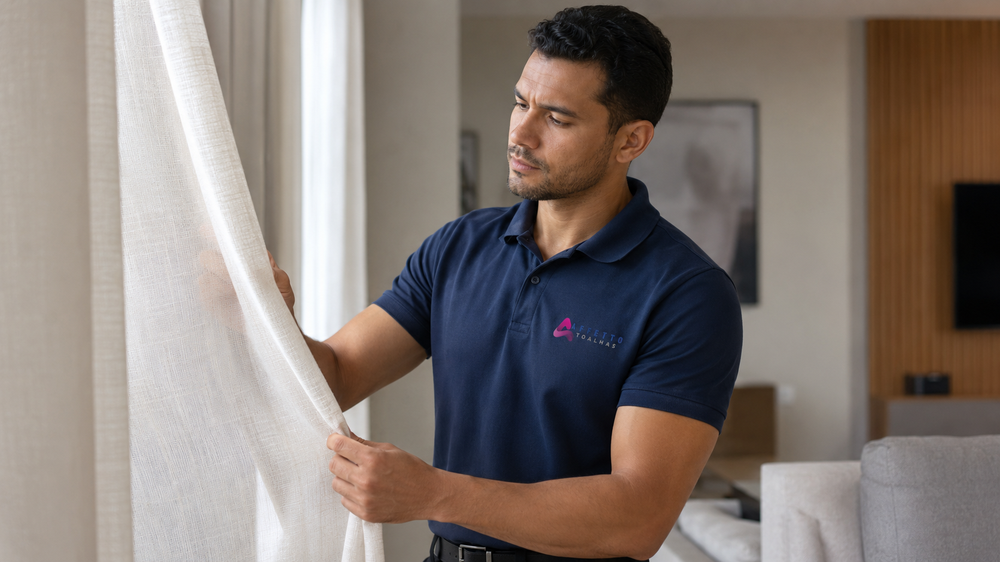
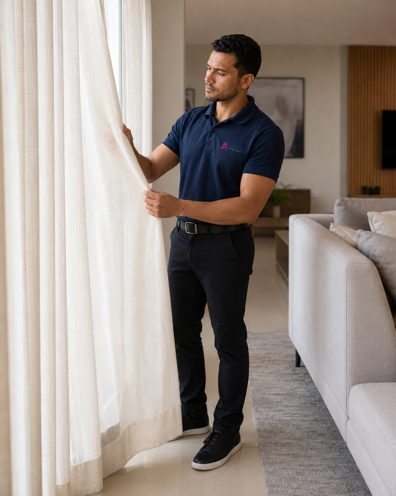
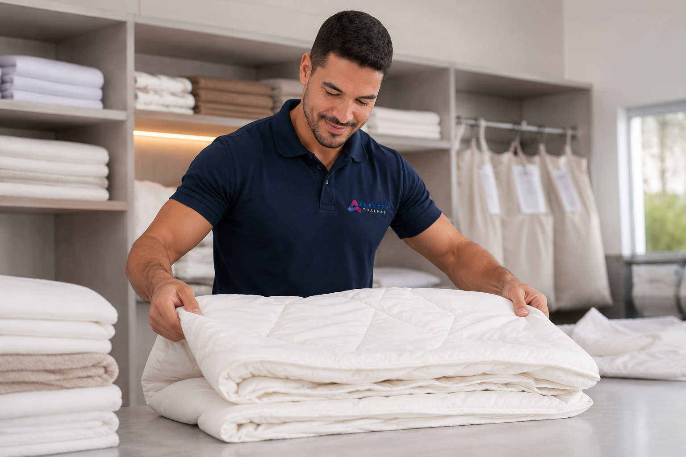
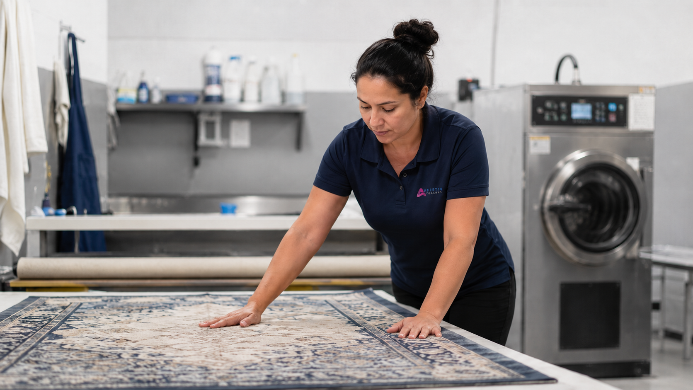

Cortinas
Lavagem profissional de cortinas com avaliação da peça, retirada e entrega na região.
Ver lavagem de cortinasA Affetto atende Balneário Camboriú com lavagem profissional de cortinas, edredons, tapetes e roupas de cama, com processo cuidadoso, produtos biodegradáveis e coleta conforme rota e disponibilidade.

Cortinas, edredons, tapetes, roupas de cama e retirada conforme rota e disponibilidade.

Lavagem profissional de cortinas com avaliação da peça, retirada e entrega na região.
Ver lavagem de cortinas
Higienização de edredons, cobertores, mantas, lençóis e peças volumosas.
Ver lavagem de edredons
Higienização de tapetes conforme avaliação do material, manchas, odores e condições da peça.
Tirar dúvidas sobre tapetesInforme bairro e peças pelo WhatsApp para consultar rota em Balneário Camboriú.
Informe bairro, peças e necessidade.
Verificamos agenda e disponibilidade.
Retirada combinada conforme acesso ao local e rota.
Prazo médio de 3 dias úteis, conforme peça e agenda.
A Affetto atende clientes que buscam praticidade no cuidado com cortinas, edredons, tapetes e roupas de cama. Em condomínios com portaria, pode ser possível combinar a retirada conforme orientação do cliente e regras do prédio.
Perguntas comuns sobre atendimento em Balneário Camboriú.
Sim, conforme rota, agenda e disponibilidade.
Depende da rota, valor do pedido e disponibilidade.
Em muitos casos, sim, conforme orientação do cliente e regras do prédio.
Sim. A coleta pode incluir diferentes peças.
O prazo médio é de 3 dias úteis, podendo variar.
Fale com a Affetto pelo WhatsApp, informe bairro e peças para consultar rota, prazo e disponibilidade.